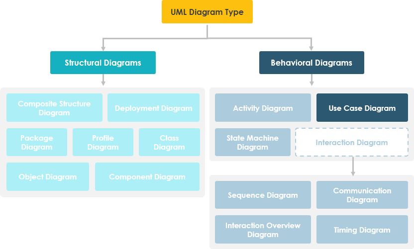
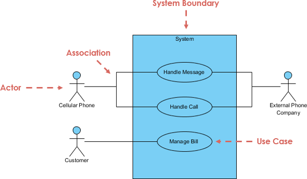
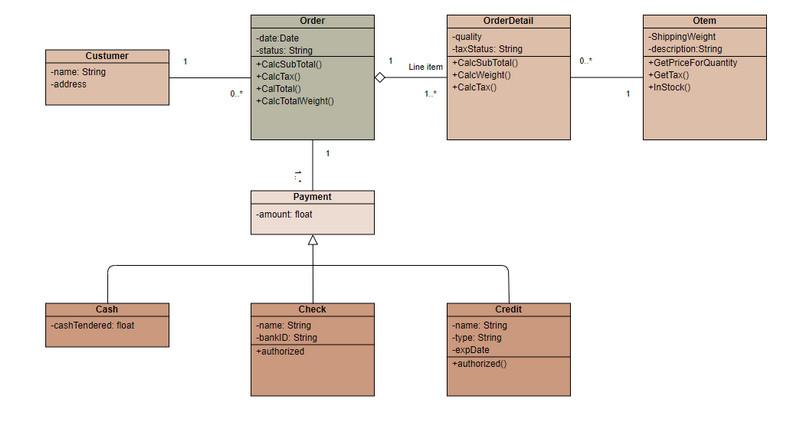
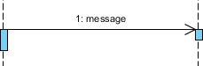
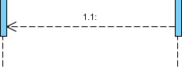
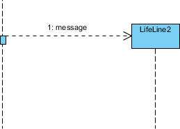
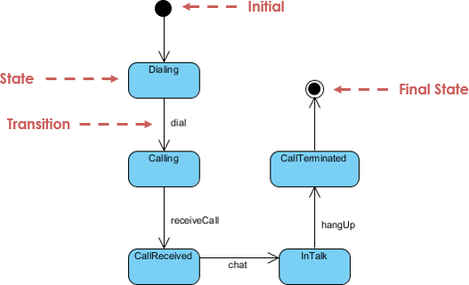

UML-i diagrammikeel
Mis on UML?
UML (Unified Modeling Language – ühtne modelleerimiskeel) on visuaalne modelleerimiskeel, mis aitab tarkvaraarendusel.
See võimaldab nii kliendile kui ka arendajale endale ning erinevatele protsessiga seotud isikutele täpsemalt kuvada, milline arendatava toote sisemine struktuur peaks erinevatel tasanditel olema.
UML on aga ka harukeel, ehk teisisõnu on olemas erinevaid diagramme.
UML defineerib ära nende erinevate diagrammitüüpide representatsioonid, keskendudes spetsiifilisel tasemel vajaminevale kirjeldusele.
Näiteks tarkvaratoote käitumise kirjeldamiseks on olemas käitumisdiagrammid, andmestruktuuri kirjeldamiseks on näiteks olemite diagramm (ERD) ja nii edasi, erinevate aspektide kohta.
UML-i kasutatakse nii uue arendustöö kirjeldamiseks kui ka olemasoleva dokumenteerimiseks.
Kuidas UML tekkis?
UML tekkis vajadusest kujutada objektorienteeritud programmeerimise jaoks ühtset keelt, mis kuvaks protsessi ilma koodita.
Algselt tekkis see, kui Grady Booch ja James Rumbaugh ühendasid oma diagrammikeeled,
kuhu aja jooksul tekkis ka teisi harusid juurde. UML ise on akronüüm ingliskeelsest terminist "Unified Modeling Language".
Mida saab kujutada UML-iga – ehk kui palju diagrammiliike on olemas?
Erinevaid UML-i liike on palju, mis jagunevad laias laastus struktuuridiagrammideks (näiteks klassi-, komponendi- ja juurutusdiagrammid) ja käitumisdiagrammideks (näiteks kasutusjuhtumi-, tegevus- ja jadadiagrammid). Mõned näited on:

- Vooskeem (Flowchart)non-UML
- Olemidiagramm (Entity Relationship Diagram - ERD)non-UML
- Klassidiagramm (Class Diagram)
- Objektidiagramm (Object Diagram)
- Koostöödiagramm (Collaboration Diagram) UML 1.4
- Kasutusjuhtude diagramm (Use Case Diagram)
- Olekuskeem (State Machine Diagram / State Diagram)
- Tegevusdiagramm (Activity Diagram)
- Komponendidiagramm (Component Diagram)
- Kommunikatsioonidiagramm (Communication Diagram) UML 2.5.1
- Ajastuskeem (Timing Diagram)
- Jadaskeem (Sequence Diagram)
- Juurutus-/Levitusskeem (Deployment Diagram)
- Paketiskeem (Package Diagram)
- Profiilidiagramm (Profile Diagram)
Mõningaid UML-i liike lähemalt
Kasutusjuhtude diagramm (Use Case Diagram)
Lühikirjeldus (Iseloomustus)
Kasutusjuhtude diagramm (Use Case Diagram) on üks peamisi tööriistu süsteemi analüüsis ja disainis.
See diagramm kajastab süsteemi ja selle kasutajate (aktorite) vahelisi suhteid, näidates,
kuidas kasutajad suhtlevad süsteemi komponentidega ja milliseid teenuseid süsteem pakub.
Kasutusjuhtumite skeem aitab arendajatel ja analüütikutel mõista, kuidas süsteem peaks käituma ja kuidas tagada, et kõik kasutusjuhtumid katavad kasutajate vajadused.
Kujundite/Joonte lahtiseletus
| |
Näitleja
- Keegi suhtleb kasutusjuhtumiga (süsteemi funktsiooniga).
- Nimetatud nimisõna järgi.
- Näitlejal on äris oma roll
- Sarnane kasutaja mõistega, kuid kasutajal võib olla erinevaid rolle.
- Tegelane käivitab kasutusjuhtumi(d).
- Tegejal on süsteemi ees vastutus (sisendid) ja tegutsejal on süsteemi suhtes ootused (väljundid).
|  |
Kasutusjuhtum
- Süsteemi funktsioon (protsess - automatiseeritud või käsitsi)
- Nimetatud tegusõna + nimisõna (või nimisõnafraasi) abil.
- Tee midagi
- Iga tegelane peab olema seotud kasutusjuhtumiga, samas kui mõned kasutusjuhud ei pruugi olla tegelastega seotud.
|  |
Sideühendus
- Tegelase osalemist kasutusjuhul näidatakse tegelase ühendamisega kasutusjuhuga kindla lingi abil.
- Tegelased võivad olla kasutusjuhtudega seotud seoste kaudu, mis näitab, et tegelane ja kasutusjuhtum suhtlevad omavahel sõnumite abil.
|
|
Süsteemi piir
- Süsteemi piir on potentsiaalselt kogu süsteem, nagu see on määratletud nõuete dokumendis.
- Suurte ja keerukate süsteemide puhul võib iga moodul olla süsteemi piir.
- Näiteks organisatsiooni ERP-süsteemi puhul on kõik moodulid, näiteks personal, palgaarvestus, raamatupidamine jne.
- saab moodustada süsteemi piiri iga ärifunktsiooni spetsiifiliste kasutusjuhtude jaoks.
- Kogu süsteem võib hõlmata kõiki neid mooduleid, mis kujutavad süsteemi üldist piiri.
|  |
| |
Üks näidisjoonis

Klassidiagramm (Class Diagram)
Üks silmapaistvamaid struktuurseid UML-i liike on klassidiagramm. Seda kasutatakse tarkvarainseneride seas tarkvaraarhitektuuri dokumenteerimiseks.
Klassidiagrammid on struktuursete diagrammide vorm, kuna need täpsustavad, millest peab modelleeritud süsteem koosnema (klassid, atribuudid, operatsioonid ja seosed nende vahel).
Lühikirjeldus (Iseloomustus)
Klassidiagrammi peamine eesmärk on kirjeldada süsteemi staatilist struktuuri. See näitab klasside, nende atribuutide (andmeväljade), operatsioonide (meetodite) ning nendevaheliste seoste (nt. pärilus, assotsiatsioon, kompositsioon) esitust. See on aluseks objektorienteeritud süsteemide kavandamisele.
Kujundite/Joonte lahtiseletus
- Klass (ristkülik kolme sektsiooniga): Jaguneb kolmeks osaks: nimi, atribuudid (andmed) ja operatsioonid (meetodid).
- Assotsiatsioon (pidev joon): Kaks klassi on omavahel seotud. Seose otstesse lisatakse sageli kardinaalsus (nt. 1..* – üks või rohkem).
- Pärilus/Generaliseerimine (pidev joon tühja kolmnurgaga): Näitab, et üks klass (alamklass/subklass) pärib omadused teiselt klassilt (ülemklass/superklass).
- Agregeerimine (pidev joon tühja rombiga): Tervik-osa suhe, kus osad võivad eksisteerida ka ilma tervikuta (nt. auto ja ratas).
- Kompositsioon (pidev joon täidetud rombiga): Tervik-osa suhe, kus osad ei saa eksisteerida ilma tervikuta (nt. raamat ja lehekülg).
- Implementeerimine (katkendlik joon tühja kolmnurgaga): Näitab, et klass realiseerib liidese (Interface).
Üks näidisjoonis

Jadaskeem (Sequence Diagram)
Jadaskeem (Sequence Diagram) esitab süsteemi objektide omavahelist suhtlemist.
Jadaskeemi oluliseks omaduseks on selle ajaline järjestus.
S.o. esitatakse samm-sammult täpne objektide vaheline interaktsioon. Erinevad objektid jadaskeemil suhtlevad omavahel sõnumite edastamise kaudu.
Lühikirjeldus (Iseloomustus)
UML-i järjestusskeemid on interaktsioonidiagrammid, mis kirjeldavad toimingute teostamist.
Need jäädvustavad objektidevahelist interaktsiooni koostöö kontekstis. Järjestusskeemid on ajaliselt keskendunud ja näitavad interaktsioonide järjekorda visuaalselt,
kasutades diagrammi vertikaaltelge aja, sõnumite saatmise aja ja aja esitamiseks.
Kujundite/Joonte lahtiseletus
| |
| Näitleja (Actor)
Roll, mida üksus subjektiga suhtleb (nt signaalide ja andmete vahetamise kaudu). Subjekti suhtes väline (st selles mõttes, et toimija eksemplar ei ole osa vastava subjekti eksemplarist). Esindavad inimeste, välise riistvara või muude subjektide rolle.
Pane tähele, et: Tegelane ei esinda tingimata konkreetset füüsilist üksust, vaid lihtsalt mingi üksuse konkreetset rolli. Inimene võib mängida mitme erineva näitleja rolli ja vastupidi, antud näitlejat võivad mängida mitu erinevat inimest.*
|  |
| Päästerõngas (Lifeline)
Päästerõngas esindab interaktsioonis osalejat.
|  |
| Aktiveerimised (Activations)
Õhuke ristkülik eluliinil tähistab perioodi, mille jooksul element toimingut teeb. Ristküliku ülemine ja alumine serv on joondatud vastavalt algus- ja lõppajaga.
|  |
| Helista Sõnum (Call Message)
Sõnum määratleb konkreetse suhtluse eluliinide vahel interaktsioonis. Kutseteade on teatud tüüpi teade, mis esindab sihtmärgi päästerõnga toimimise kutsumist.
|  |
| Vastussõnum (Reply Message)
Sõnum määratleb konkreetse suhtluse eluliinide vahel interaktsioonis. Vastussõnum on teatud tüüpi sõnum, mis esindab teabe edastamist vastava eelmise sõnumi helistajale.
|  |
| Enda sõnum (Self Message)
Sõnum määratleb konkreetse suhtluse eluliinide vahel interaktsioonis. Endasõnum on omamoodi sõnum, mis esindab sama eluliini sõnumi kutsumist.
|  |
| Rekursiivne sõnum (Recursive Message)
Sõnum määratleb konkreetse suhtluse eluliinide vahel interaktsioonis. Rekursiivne sõnum on sõnumitüüp, mis esindab sama eluliini sõnumi käivitamist. Selle sihtmärk osutab aktiveerimisele, mis on kõrgem aktiveerimisest, kust sõnum käivitati.
|  |
| Loo sõnum (Create Message)
Sõnum määratleb konkreetse suhtluse eluliinide vahel interaktsioonis. Loo sõnum on teatud tüüpi sõnum, mis esindab (siht) päästerõnga instantsi.
|  |
| Hävita sõnum (Destroy Message)
Sõnum määratleb konkreetse suhtluse eluliinide vahel interaktsioonis. Hävitusteade on teade, mis esindab sihtmärgiks oleva päästerõnga elutsükli hävitamise taotlust.
|  |
| Kestussõnum (Duration Message)
Sõnum määratleb konkreetse suhtluse eluliinide vahel interaktsioonis. Sõnumi kestus näitab sõnumi kutsumise kahe ajahetke vahelist kaugust.
|  |
| Märkus (Note)
Märkus (kommentaar) annab võimaluse elementidele erinevaid märkusi lisada. Kommentaaril ei ole semantilist jõudu, kuid see võib sisaldada modelleerijale kasulikku teavet.
|  |
| |
Üks näidisjoonis

Olekuskeem
Nagu ka nimi ütleb, näitab olekuskeem (State Machine Diagram) erinevaid olekuid, mida süsteemis olevad objektid oma elutsükli jooksul läbivad.
Lühikirjeldus (Iseloomustus)
Süsteemis olevad objektid muudavad oma olekut vastavalt süsteemis toimuvatele sündmustele.
Lisaks sellele näitab olekuskeem ka objekti oleku üleminekut (transitsiooni) algolekust lõppolekusse vastavalt süsteemi mõjutavatele sündmustele.
Kujundite/Joonte lahtiseletus
| |
| Algolek, Start | ⚫ |
| Olek,"Puhkehetk" või tegevusperiood. | ▢ (ümara nurgaga) |
| Üleminek, Liikumine olekute vahel. | ⟶ |
| Valik, "Kas X või Y?" (Tingimuslik hargnemine). | ◇ |
| Lõppolek, Finiš. | ◉ |
| |
Üks näidisjoonis

Profiilidiagramm (Profile Diagram)
Tarkvaratehnika valdkonnas kasutatavas ühtses modelleerimiskeeles (UML) töötab profiilidiagramm metamudeli tasandil.
See kuvab stereotüüpe klassidena ja profiile pakettidena, koos spetsiaalsete märgetega.
Laiendusseos (pidev joon täidetud nooleotsaga) näitab, millist metamudeli elementi antud stereotüüp laiendab. See võimaldab UML-i kohandada konkreetsete valdkondade või platvormide jaoks (nt. Java, C++ jne.).
Lühikirjeldus (Iseloomustus)
Kui klassidiagramm kirjeldab koodi ja objektidiagramm käitusaegseid objekte, siis profiilidiagramm töötab metamudeli tasemel.
- Eesmärk: Luua domeenispetsiifilisi keeli (DSL) või kohandada UML-i konkreetse tehnoloogia jaoks (nt Java, .NET, reaalaja süsteemid).
- Kuidas see töötab: See ei muuda UML-i tuuma, vaid lisab sinna uusi "silte" ja reegleid.
- Näide: Selle asemel, et kasutada lihtsalt tavalist "Klassi", saate luua profiili, mis defineerib täpsema elemendi nagu "Veebiteenus" või "Sensor".
Kujundite/Joonte lahtiseletus
| |
| Profiil (Profile) Pakett (konteiner), mis koondab kõik sinu loodud reeglid ja laiendused ühte kohta. | 📁 «profile» |
| Stereotüüp Sinu loodud "uus" element. See defineerib, milline spetsiifiline asi (nt "Nupp") süsteemis on. | ▭ «stereotype» |
| Metaklass Standardne UML element (nt "Class"), mida sa tahad muuta või täpsustada. | ▭ «metaclass» |
| Laiendamine (Extension) Kõige tähtsam joon. Ühendab Stereotüübi Metaklassiga. Näitab, et "see stereotüüp laiendab seda standardset elementi". | ──▲ (Must) |
| Piirang (Constraint) Reegel, mis peab kehtima (nt {suurus peab olema > 0}). | { } |
| Märgistatud väärtus Lisaandmed stereotüübi sees (nt autor: "Jüri", versioon: "1.2"). | tag: value |
| |
Üks näidisjoonis

Kontrolli oma teadmisi UML-ist